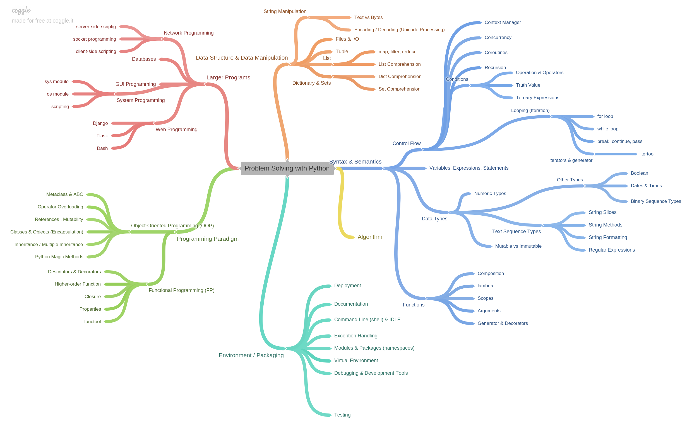

StudiMY: A practical curriculum to programming in Python¶
Introduction¶
What¶
StudiMY is an initiative by MARIMORE ENGINEERING SDN. BHD. (925539-H) with help from Xoxzo Inc to create and maintain a study curriculum and materials for the teaching of programming in a classrom environment, guided by a mentor.
StudiMY materials focuses on the Python language and includes other software, libraries or frameworks which are Python based.
Why¶
In March 2014, when the first mini PyCon (Python Conference) was held in Malaysia, we had around 70 people come to have fun and learn from each other.
Three years later in August 2017, when PyCon APAC was held in Kuala Lumpur around 180 people came, with nearly half of those coming from overseas, including Singapore. This meant that the local Malaysian community as far as the conference was concerned did not grow much since we started mini PyCon.
The percentage of new comers to the programming language that makes up the attendees at these conference did not change much. We have been wondering on why there is little uptake from the general public to get involved in Python.
At the same time one of the most requested item during each conference was a tutorial about programming basics in Python.
Now, with the understanding that the new literacy for the future is programming, the popularity and interest in Python as a first step to learning programming has increased.
Coupled this with the data that we collected from the public via our mailing list who are interested to learn Python, we now know that a huge interest is because the perceived need to prepare for new jobs, we know understand that there is a huge push factor to learn programming.
In hindsight, those requests for Python tutorials during the PyCons makes sense.
I know feel that although there are many reasons for the small uptake of interest in the general public to our PyCon conferences, one of major hurdles might and may still be the accesibility of getting your first step to understanding and using the programming language.
How¶
There are many options to study programming using Python. Some of us learn it by doing it ourselves through tips and tutorials we find on the internet. Some of us learn it via books on our own pace, while others join paid classes online and work on problems and get marks to gauge their leve of understanding.
On the other hand, there are some of us who would like hands on teaching with a mentor alongside to guide us along the way.
StudiMY puts emphasis on classroom experience and understanding when writing its curriculum. We do not try to cram every topic to mark as many checkboxes as possible.
Our Aim¶
Our aim is not to be your run-of-the-mill one stop shop to study programming. We are community driven (anyone can choose to use or contribute to the curriculum and materials in this project) and we focus on Python as a tool for you to learn programming.
Our aim is to help students and ex-students to not only learn how to use Python, but to first transform them into engineers, capable of problem solving through understanding of the Python ecosystem and engineering best practices, who are aware of the important role of community to learning, and finally hopefully turn into a contributing part of that community and help others learn to program.
Of course, learning programming will certainly give you a skill set to move up your carrier or to perhaps future-proof yourself, but we do not envision the students taking our classes to just stop there.
Teaching concepts¶
StudiMY puts emphasis on classroom experience and understanding when writing its curriculum. We do not try to cram every topic to mark as many checkboxes as possible.
The overall concept it to produce a higher level of understanding from practical knowledge by doing actual exercises while walking through a particular curriculum, with the mentor pointing in the right direction and students helping each other.
We believe this will allow students to not just be programmers, but engineers and makers in the long run by cultivating the ability to identify reusable concepts and self-study through trial-and-error.
Project structure¶
Each repository in the project represents one classroom curriculum. Each classroom curriculum can be considered as a 5 or 6-hour learning experience, led by at least one mentor.
Roadmap¶
A lot of Python beginners are unable to see where they are going when they learn the language in a topical manner.
So we came up with a mindmap, hopefully this will help us to see the bigger picture. We have categorise the topics into roughly 6 categories:-
- Syntax and Semantics
- Data Structure
- Algorithm
- Programming Paradigms
- Environment and Packaging
- Larger Programs
The idea is to list down the major pillars that will help us to be a better problem solver / software engineer and its respective topics that will help us to master them. Although your learning is topical, knowing how to apply your knowledge is always better than just knowing the theory.
Remember !
It does not matter how much you know, it’s all about knowing how to apply what you know - problem solving.
Mindmap - Problem Solving with Python
How To Contribute to Mindmap¶
- Update the this text file.
- Core team will upload import the text file into coggle.